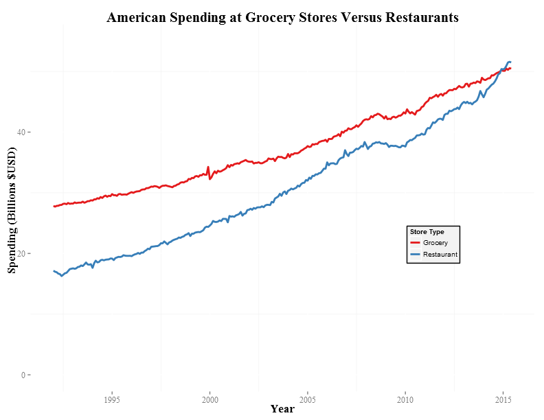
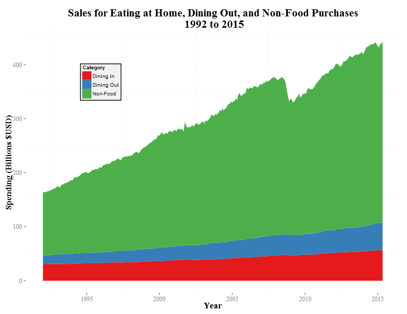
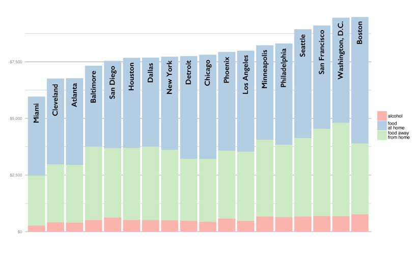

The Cost of Dining Out
Data Visualization
Team Foodies
Abby Dexter, Eric Hansen, Eli Nelson, Heather Ohana
- To start the presentation, click the right arrow in the lower right corner.
- To view the overall presentation framework, press ESC.
- Press the Play button to begin autoplay.
A Historical Perspective on American Food Spending
We gathered various aggregate data about how Americans have spent their food dollars from 1955 to present.
Click the down arrow in the lower right corner to continue.
Restaurant Expenditures are on the Rise
Nationally, Americans started spending more at restaurants than in grocery stores just this year.
Restaurants now occupy a much greater share of the food expenditures budget

Since 1955, the percentage of food dollars Americans spend in restaurants has nearly doubled.
Spending on eating at home and in restaurants is nearly recession proof
A downturn in the economy in 2009 had very little effect on food spending overall.
Spending on eating at home and in restaurants is nearly recession proof
Proportional retail spending on dining out remains fairly stable for the entire time period.
Home or Away? Where Americans are consuming their meals
The number of meals at home is decreasing, while fast food and restaurant dining is more popular.
How Restaurant Costs and Food Budgets Vary Across the US
We took an in-depth look at 18 major cities and the intersection of the average cost of a restaurant ticket and various city statistics.
Click the down arrow in the lower right corner to continue.
How does population relate to the average cost of a dinner out?
Cities with higher population, and higher population density, tend to have higher average total restaurant ticket costs.
How does income relate to the average cost of a dinner out?

The relationship between income and average cost of dining out is less clear. The total percentage of income spent on food and alcohol appears to be city dependent.
Where do people's food dollars go?
People still spend most of their money on food eaten at home.
Food Access, Dining Out, and the Effect on Diet and Health
We mapped county level data about adult obesity rates and access to three sources of food: farmers' markets, fast food restaurants and full service restaurants.
Click the down arrow in the lower right corner to continue.
Obesity is Trending Higher As Restaurant Popularity Rises
Over two-thirds of the American population is considered to be overweight or obese.
Low income women who shopped at farmers' markets consumed an average of 3 additional servings of fruits and vegetables a day compared to a control group.
People who live in the Southeast are more likely to choose fast food when eating away from home.
A 10% increase in the number of restaurants per-capita results in an 8% rise in the number of obese people in the population.
Additional calories consumed compared with at home meals depends on meal and body type
For an average consumer, eating out for lunch adds the most calories compared with at home meals, and weight also plays a factor in how many additional calories are consumed when eating out.
For the average consumer, dining out once per week translates to a two pound weight gain per year
Over 50% of Americans eat out three times per week.
Over 12% of Americans eat out seven times per week.
References
2010 United States census. (2015). Retrieved from https://en.wikipedia.org/wiki/2010_United_States_Census#Metropolitan_rankings
Bureau of Labor Statistics. (2014). Occupational Employment Statistics [Data file]. Retrieved from http://www.bls.gov/oes/current/oessrcma.htm
Binkley, J. K. (2006). The effect of demographic, economic, and nutrition factors on the frequency of food away from home. Journal of Consumer Affairs, 40(2), 372-391.
Chou, S. Y., Grossman, M., Saffer, H. (2004). An economic analysis of adult obesity: Results from the behavioral risk factor surveillance system. Journal of Health Economics 23, 565-587.
Food Access Research Atlas. (2015, March 11). Retrieved from http://www.ers.usda.gov/data-products/food-access-research- atlas/go-to-the-atlas.aspx
References
Guthrie, J., Lin, B. H., Okrent, A., & Volpe, R. (2013, February 21). Americans’ food choices at home and away: How do they compare with recommendations? Retrieved from http://www.ers.usda.gov/amber-waves/2013-february/americans-food-choices-at- home-and-away.aspx#.VdyQkflVhBc
Jameson, M. (2011, July 4). Eating at restaurants boosts risk of obesity, experts warn. Orlando Sentinel. Retrieved from http://articles.orlandosentinel.com/2011-07-04/health/os-restaurants-obesity-20110704_1_restaurant-foods-eating-obesity-experts
Ogden C. L., Carroll, M. D., Kit, B. K., & Flegal K. M. (2014). Prevalence of childhood and adult obesity in the United States, 2011-2012. Journal of the American Medical Association, 311(8), 806-814.
Ogden, C. L., & Carroll, M. D. (2010). Prevalence of overweight, obesity, and extreme obesity among adults: United States, trends 1960–1962 through 2007–2008. National Center for Health Statistics, 6, 1-6.
Parker-Pope, T. (2008, January 15). The farmers’ market effect. New York Times. Retrieved from http://well.blogs.nytimes.com/2008/01/15/the-farmers-market-effect/?_r=0
References
Restaurant industry’s share of the food dollar in the United States in 1955 and 2014. (2014, January). Retrieved from http://www.statista.com.turing.library.northwestern.edu/statistics/302186/restaurant- industry-s-share-of-the-food-dollar-us/
Strawhecker Group. (2015, June). Eating out: What you will pay at the largest 100 cities in the U.S. [Unpublished raw data].
United States Census Bureau. (2015). Monthly & Annual Retail Trade [Data file]. Retrieved from http://www.census.gov/retail/index.html
United States Department of Agriculture Economic Research Service. (2015). Food Environment Atlas [Data file]. Retrieved from http://www.ers.usda.gov/data-products/food-environment-atlas/data-access-and-documentation-downloads.aspx